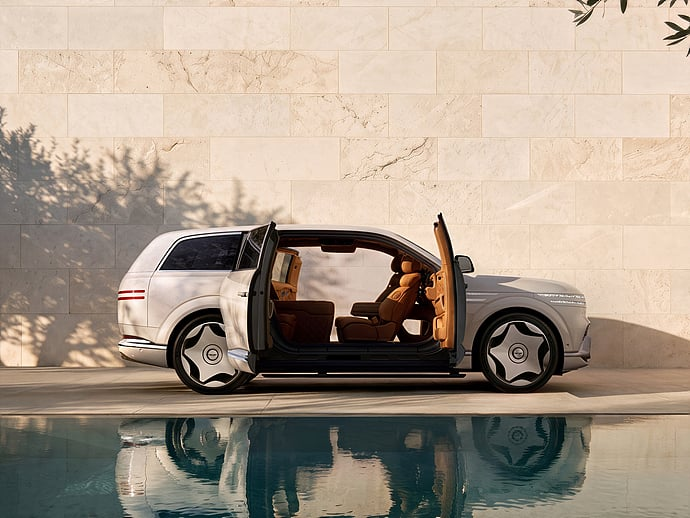
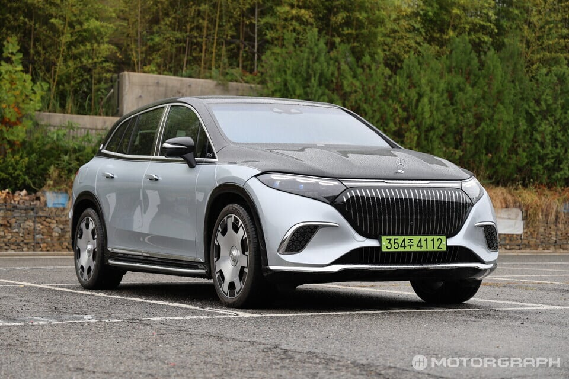

GV90 네오룬 최고 가격 2억 3,990만원

EQS 680 마이바흐 2억 3,500만원
둘이 엄청 경쟁하겠네

GV90 네오룬 최고 가격 2억 3,990만원

EQS 680 마이바흐 2억 3,500만원
둘이 엄청 경쟁하겠네
내가만얀 2억짜리 전기차를 살수잇다면 에스컬레이드iq를 살것이오…
마이바흐 디자인 하나로 드림카 라인이였는데 좆병신됬네
롤벤>>>마네
볼때마다 두줄눈깔 진짜 잘하긴했다
그나마 마이바흐에는 파라시스 배터리 장착안하네
마이바흐 개못생겻다...
가운데 byd 마크 박으면 딱일듯
플래그십? 기함? 만드는 업체가 몇군데 안될텐데
대단한 기업임
근데 깡통 계기판 삭제는 좀
마이바흐 저차는 디자인 왜 저따구지?
마이바흐의 중후함이 전혀 안느껴지네
과거 투싼 느낌 남
시벌 국산차를 2억 4천에 사는 시대라니
막상보면 안에 고급감이나 마감이나 롤스로이스 뺨치긴함
이건 제네시스 승
GV 90 뒤에가 너무 못생겼더라. 저건 뭔데 저렇게 병신같이 생겼냐 하고 봤는데 90이었어
마이바흐 왜저랴
아니잠만 마이바흐 개 좆병신됫는데?
gv90은 부자들중에서 유지비 생각하는사람들이 살듯
저거 살 급인데 유지비를 생각해야되면 그건 부자가 아니라 카푸어 아니냐
저번에 개드립글보니까 부자들중에 제네시스 타는이유가 가성비가 좋아서 산다고함 유지비가 싸다면서 기름값 10원비싼 주유소도 기피한다고함
수리비가 싸잖아
댓글 잘못단듯
주택에 본인 충전기 갖고있는 사람들은 살듯 안그래도 저런 차들은 주유소를 밥먹듯이 가는게 상당히 귀찮다는데 저건 그냥 집에 와서 충전시키면 끝이니
마이바흐 존나못생겼네
근데 디자인은 제네시스가 더 좋은데?
중국차되더니 디자인 맛탱이가 가는데?
저렇게 두개 세워두니 제네시스가 선녀네..
2억이면 아9 2대 사고 싶다 ㅠㅠ
나는 저 투톤 좋단 사람들을 잘 모르겠어..